Home / Past papers / MLT End Term / this paper
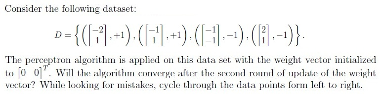
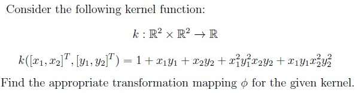
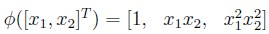
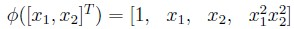
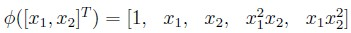
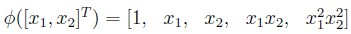
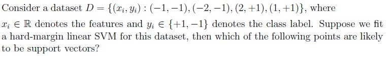
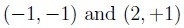
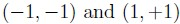
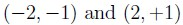
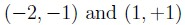
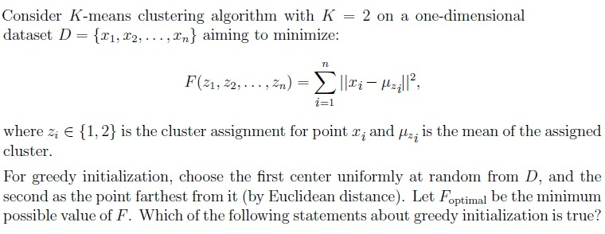
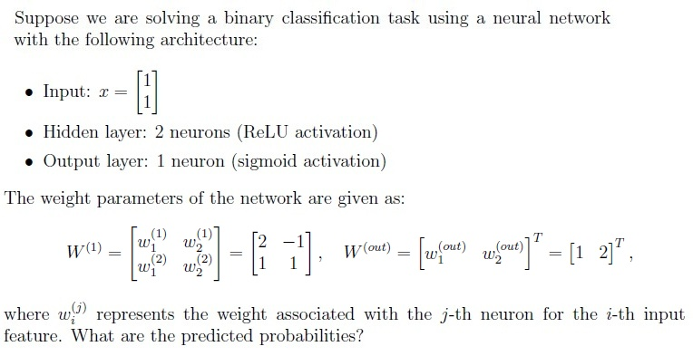
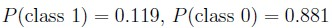
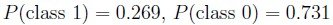
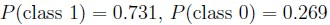
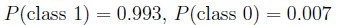
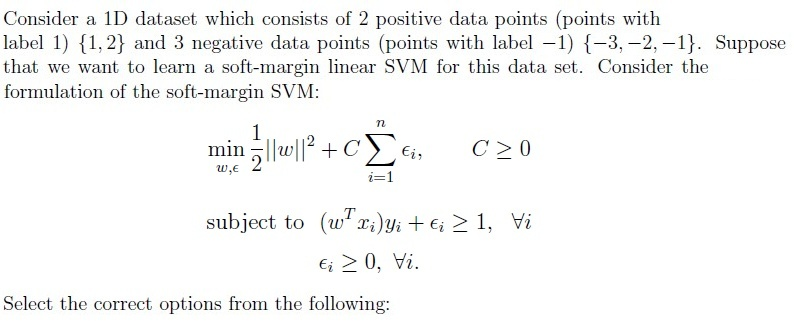
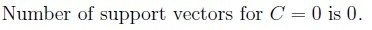
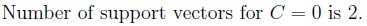
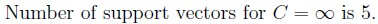
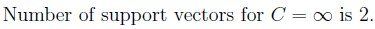
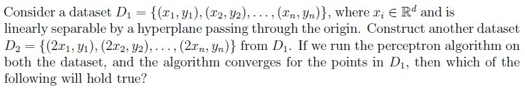
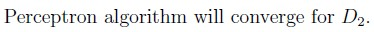
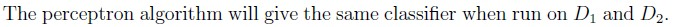
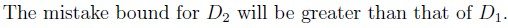
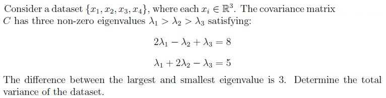
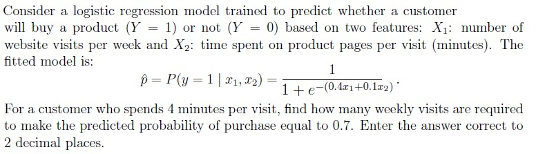
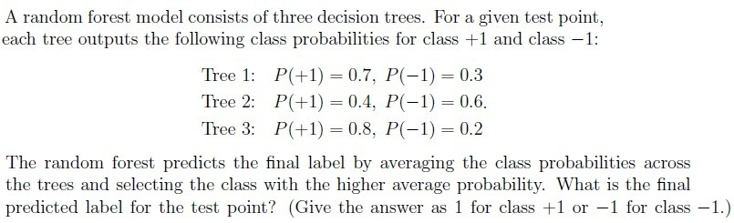
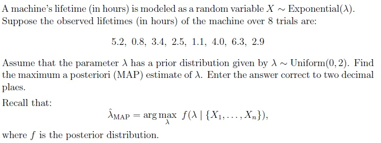
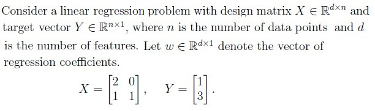
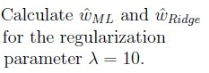
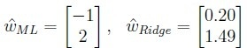
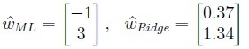
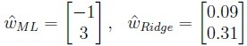
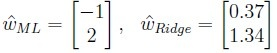
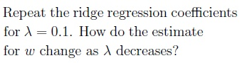
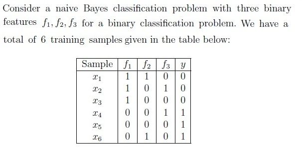
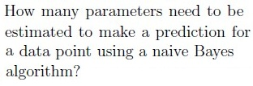
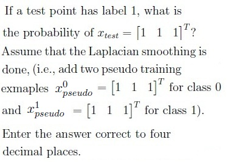
Auto-generated summary from the source site. Handy as a checklist; the lessons above explain each idea from scratch.
Here’s a structured summary of the core topics, concepts, principles, and equations essential for the Diploma Level: Machine Learning Techniques exam, along with Mermaid knowledge graphs to visualize relationships.
Perceptron Algorithm
Key Equation:
Support Vector Machines (SVM)
Key Equations:
Logistic Regression
Key Equation:
Neural Networks
Key Equations:
Linear Regression & Ridge Regression
Key Equations:
K-Means Clustering
Key Equation:
Principal Component Analysis (PCA)
Key Equation:
Naive Bayes
Key Equation:
Maximum A Posteriori (MAP) Estimation
Key Equation:
Random Forest
Decision Tree Algorithm
Key Points:
| Topic | Equation | Notes |
|---|---|---|
| Perceptron Update | (if misclassified) | Converges if linearly separable. |
| SVM (Hard-Margin) | s.t. | Support vectors lie on margin. |
| SVM (Soft-Margin) | s.t. | : Trade-off between margin and error. |
| Logistic Regression | Sigmoid activation. | |
| Kernel Trick | Enables non-linear decision boundaries. | |
| K-Means Objective | NP-hard; sensitive to initialization. | |
| Ridge Regression | : Regularization strength. | |
| Naive Bayes | Assumes conditional independence. | |
| MAP Estimation | Combines likelihood and prior. | |
| PCA Total Variance | : Eigenvalues of covariance. |
Perceptron/SVM:
K-Means:
Neural Networks:
Decision Trees:
Probabilistic Models:
Regression:
PCA: